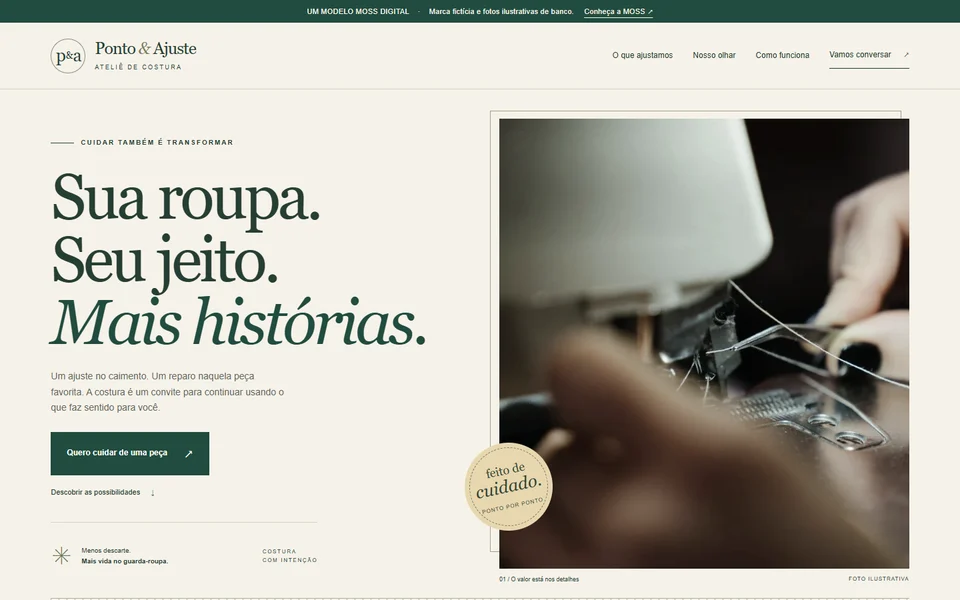

PONTO & AJUSTE / ATELIÊ DE COSTURA
Um site que
dá novo ponto.
UMA DEMONSTRAÇÃO CRIADA PELA MOSS DIGITAL

Galeria de costuraConversa pelo WhatsAppBanco de dados opcional
Marca fictícia e fotos de banco ilustrativas. Demonstração de site, sem ateliê real, compras ou entregas.